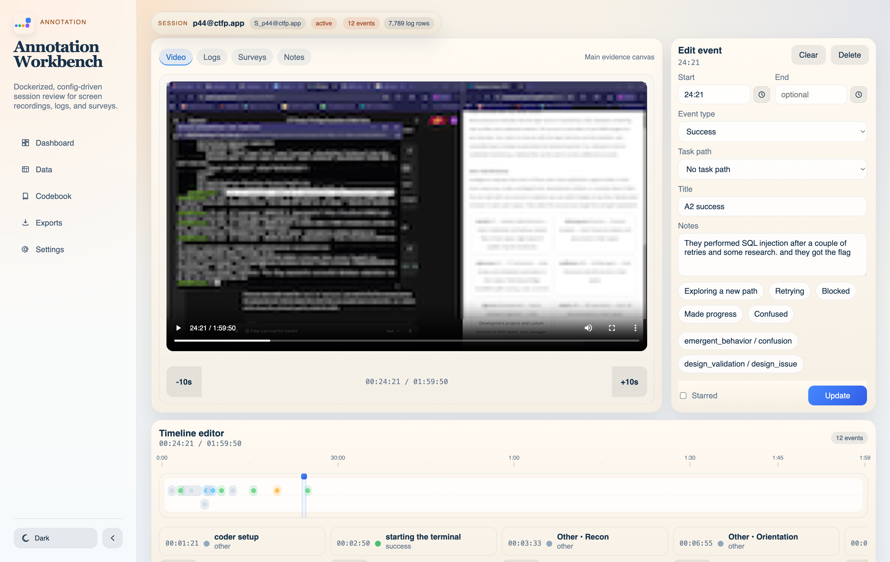

Run locally without manual Python or Node installs.
AI-enabled
Qualitative Session Review + AI Assistance
Turn session recordings into structured qualitative insight.
Review screen recordings, annotate meaningful moments, connect logs and surveys, and draft evidence-grounded summaries with an optional AI assistant from one local-first research workspace.

AI Assistant
Draft evidence-grounded memos and ask session-aware questions while reviewing.
Adapt surveys, logs, codebooks, and mappings without rewriting the app.
Keep sensitive qualitative data on the research machine, with provider choice for AI.
Features
Built for multi-source qualitative review.
Annotation Workbench combines session video, logs, surveys, memos, timeline events, and structured data exploration in one workflow.
Embedded AI assistance
Draft memos in-place, ask session-aware questions, and keep every AI suggestion reviewable before saving.
Session review workspace
Watch screen recordings, navigate session evidence, and annotate moments on a shared timeline.
Large-table data explorer
Browse raw and normalized CSV data with filtering, sorting, and pagination for high-row-count logs.
Structured qualitative coding
Capture events, tags, notes, memos, and evidence in a format ready for later analysis.
Portable study setup
Use study-specific config templates while keeping sensitive assets and outputs local.
AI Assistant
AI support that stays inside the review workflow.
Connect OpenAI, Anthropic Claude, Ollama, or an OpenAI-compatible endpoint, then use AI where it helps: drafting editable memo text, summarizing evidence, and asking session-aware questions without leaving the annotation workspace.
In-field memo drafting
Session-aware chat
Provider configurable
Reviewer-controlled saves
Session memo
Drafting
Participant selected option A1 at 03:46, then spent most of the session exploring Task A1 tools. Evidence suggests sustained engagement with some uncertainty about whether the tool exploration reflects confusion or deliberate strategy.
AI Assistant
Summarize this session.
The participant chose the high-risk path early and stayed focused on Task A1. The
strongest evidence appears around 03:46 and the final memo event.
Workflow
From raw sessions to coded evidence
Mount a project
Add recordings, logs, surveys, and config files into the local study folder.
Run ingest
Normalize the study into sessions, survey answers, log events, and canonical CSV outputs.
Annotate moments
Create coded events, attach notes, and build memos while reviewing participant sessions.
Export and analyze
Use CSV outputs for Python, R, spreadsheets, or qualitative synthesis workflows.
Run locally
Simple Docker startup
1. Clone the repository
git clone https://github.com/kl1d/annotation.git
cd annotation2. Start the app
docker compose up --build3. Open the local workspace
Frontend: http://localhost:5173
API: http://localhost:8000/apiDocs
Reusable app, study-specific setup
The application is open source and reusable across studies, while project config, raw assets, and normalized outputs stay local to each research workflow.
project/config/*.example.yamlprovides reusable templates- real local config files are copied from templates and ignored by Git
project/assets/andproject/data/remain local to the study machine- GitHub Pages hosts this landing/docs site, not the Docker app itself
project/
assets/
videos/
logs/
surveys/
config/
project.yaml
survey_mappings.yaml
log_mappings.yaml
annotation_schema.yaml
codebook.yaml
data/
sessions.csv
survey_answers.csv
log_events.csv
timeline_events.csv